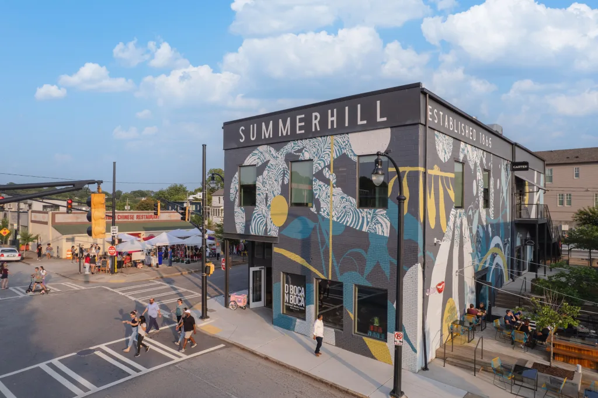
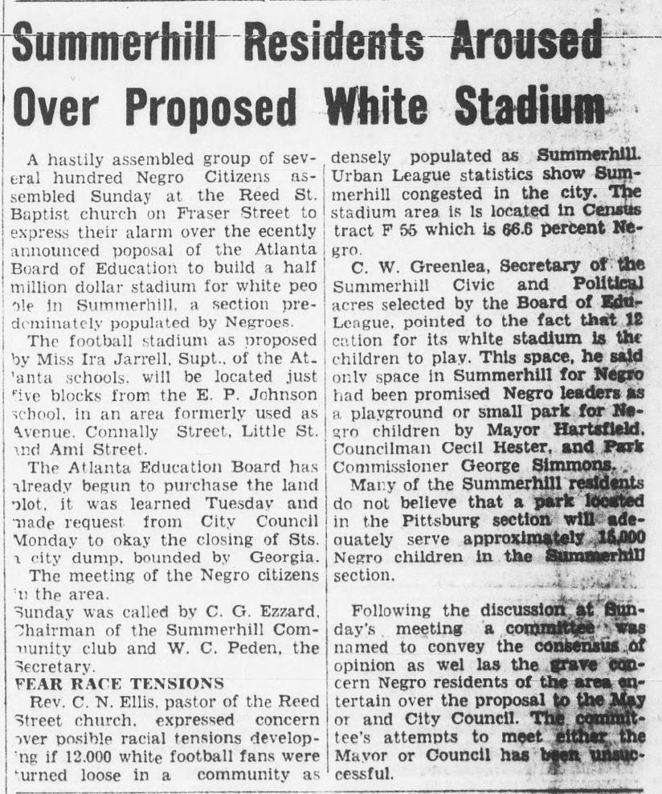
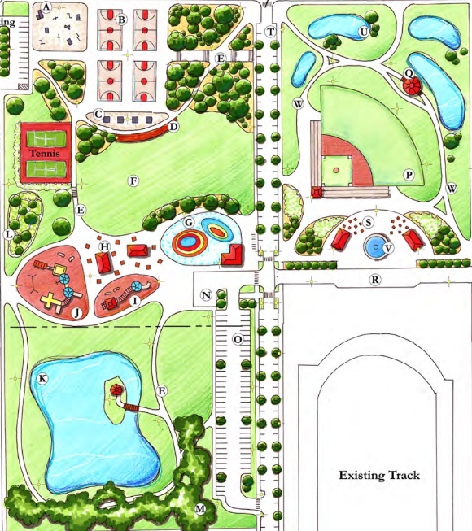

Public Value for Public Land
Our Cheney
Atlanta Track Club has proposed an indoor track facility at Cheney Field on public land in Summerhill. Our Cheney believes that long-term decisions regarding widely used public land should include meaningful community input.
Our Cheney has one simple goal: deliver public value for public land. We are excited about the possibility of this first-of-its-kind facility. We are going to help make it happen and make it work for all of us.

The community is sharing what they value, what concerns them, and what they want decision-makers to consider.
Community Feedback
Public land.
Public decision.
A community destroyed
Summerhill's History Calls for Input
Highway construction, stadium development, the Olympics, and later redevelopment have repeatedly reshaped Summerhill’s streets, homes, businesses, and public spaces.
Explore the History
A troubled past
Cheney History
Cheney field traces its history back to a closed city dump that became the neighborhood's green space. The community wanted it for a park and playground for local children. Instead, the Board of Education built a whites only football stadium in the middle of a predominantly black neighborhood.
Explore CheneyRequests for information
Questions that need public answers.
The proposal raises practical questions about public-school access, day-to-day operations, major events, land value, and watershed impacts.
See All RequestsHow the community uses our park
Our Park
Today, Phoenix II Park and the fields at Cheney provide space for sports, recreation, walking, and community gatherings. Together, they form an important part of Summerhill’s shared outdoor space.
See the Park
Open Records Requests
Public documents belong in public view.
Our Cheney has filed records requests with public agencies and organizations connected to the proposal. We will publish the documents and response status as they become available.
View Open Records